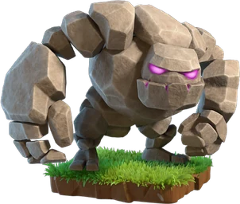

Golem — Clash of Clans
Updated: 26 August 2026 · By the Goblins Farm team
The Golem exists to be shot at. It has the highest effective durability of any dark troop, targets defences, moves slowly, and splits into smaller Golemites when destroyed, so it keeps absorbing damage even after it dies.
- Housing space
- 30
- Levels
- 15
- Trained in
- Dark Barracks
- Targets
- Ground only
- Attack speed
- 2.4s
- Range
- 1 tiles
What it does
Golems prefer defences, have enormous hitpoints and deal very little damage. When destroyed they split into Golemites, which continue moving and attacking, so the total damage a base must deal to fully remove one is considerably higher than its listed health suggests.
They are slow. Very slow. An army built around Golems is an army that needs the clock managed carefully.
How to use it
Golems lead, everything else follows.
- Deploy first and spread. Two Golems on separate lines pull fire from two directions and protect a wider front.
- Put the damage behind them. Witches, Wizards, Valkyries, whatever your army is built on, goes in after the defences have committed.
- Mind the timer. Golem armies are slow by nature, so a poor funnel does not just reduce damage, it runs out the clock.
How to beat it
Sustained single-target damage, especially anything that ramps up against one target, plus geometry that wastes time. Splash damage is largely wasted on a Golem itself but is excellent against the fragile troops walking behind it, which is usually the more productive target.
Stats by level
| Level | Hitpoints | DPS | Research cost | Research time | Town Hall |
|---|---|---|---|---|---|
| 1 | 5,100 | 35 | — | — | 8 |
| 2 | 5,400 | 40 | 4,000 Dark Elixir | 16 h | 8 |
| 3 | 5,700 | 45 | 6,000 Dark Elixir | 1 d 12 h | 9 |
| 4 | 6,000 | 50 | 10,000 Dark Elixir | 2 d | 9 |
| 5 | 6,300 | 55 | 18,500 Dark Elixir | 2 d 6 h | 10 |
| 6 | 6,600 | 60 | 26,500 Dark Elixir | 2 d 12 h | 11 |
| 7 | 7,000 | 65 | 38,500 Dark Elixir | 2 d 18 h | 11 |
| 8 | 7,500 | 70 | 50,000 Dark Elixir | 3 d | 12 |
| 9 | 7,900 | 75 | 62,500 Dark Elixir | 3 d 12 h | 12 |
| 10 | 8,200 | 80 | 80,000 Dark Elixir | 4 d | 13 |
| 11 | 8,500 | 85 | 105,000 Dark Elixir | 5 d | 14 |
| 12 | 8,800 | 90 | 122,500 Dark Elixir | 5 d 12 h | 15 |
| 13 | 9,200 | 95 | 175,000 Dark Elixir | 6 d | 16 |
| 14 | 9,600 | 100 | 230,000 Dark Elixir | 10 d | 17 |
| 15 | 10,600 | 120 | 350,000 Dark Elixir | 14 d 12 h | 18 |

Where these numbers come from. Read from Clash of Clans' own game files, client build 18.400.21. They are exact for that build and do not reflect anything released after it, so verify in game before committing an upgrade.
Game values are read from Supercell's own game files, reproduced as fan content under Supercell's Fan Content Policy. Goblins Farm is not affiliated with, endorsed, sponsored, or specifically approved by Supercell, and Supercell is not responsible for it.
 Frequently asked
Frequently asked
What are Golemites?
The smaller units a Golem splits into when destroyed. They keep moving and attacking, which means the base has to spend considerably more damage to fully remove a Golem than its listed hitpoints imply.
How many Golems should I use?
Usually one or two, deployed on separate lines so they pull fire from more than one direction. More than that consumes housing space that would be better spent on the troops actually doing damage behind them.
 Keep reading
Keep reading
Goblins Farm is not affiliated with, endorsed by, sponsored by, or specifically approved by Supercell. Clash of Clans is a trademark of Supercell Oy. This material is unofficial fan content produced under Supercell's Fan Content Policy. Game values change with every update; always verify in-game before committing an upgrade.